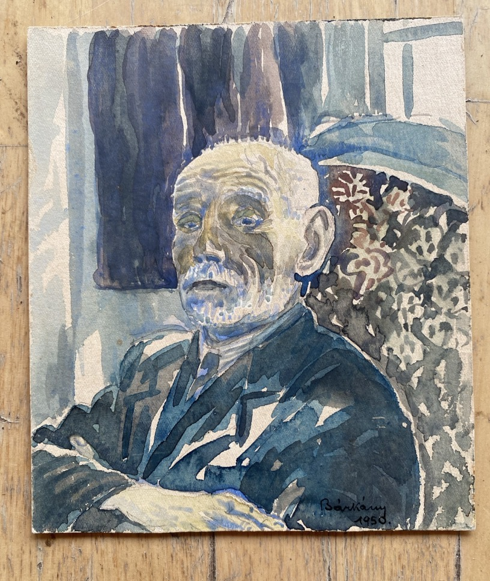
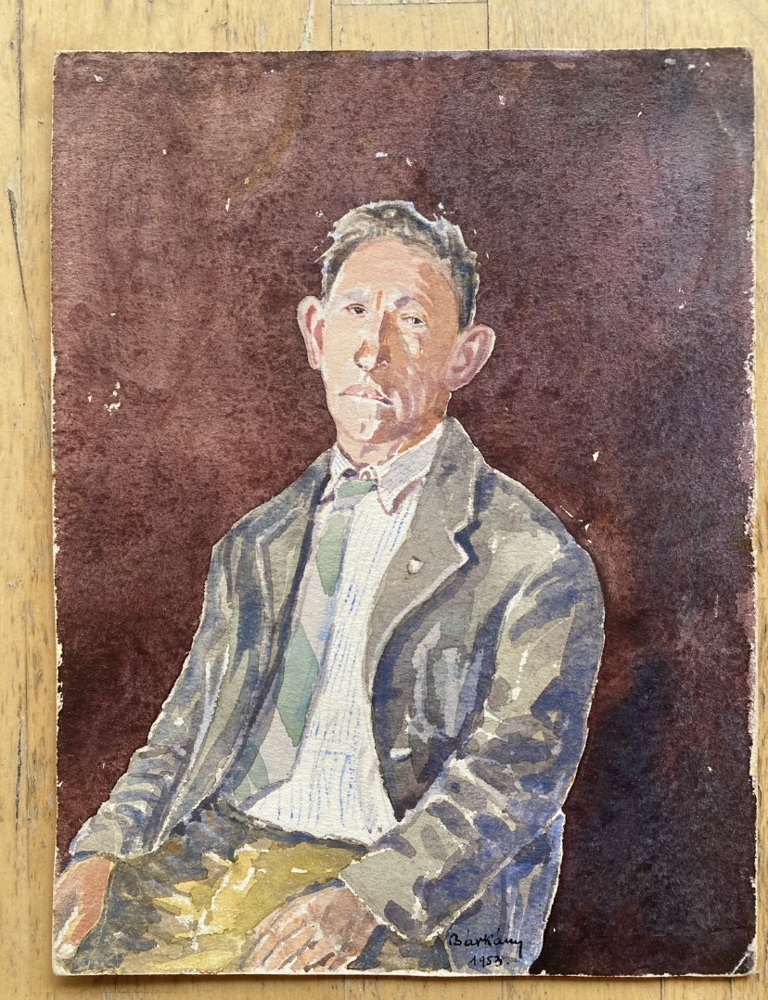

Research update — 14 October 2026
New reading of the inscriptions. With thanks to Dr. Pnina Younger, Head of Catalogue & Holdings at the National Library of Israel, whose research correspondence of 14 October 2026 provided the readings of the inscriptions on the reverse of the two portraits as “B. Führmann / 1950 / Bárkány” and “Bývalý richtar v Mereticiach” (“Former mayor of Meretice”), respectively. The identities of both sitters remain unconfirmed. The latter is not evidence that the sitter was a museum director.
Prešov Jewish Museum. Bárkány and Dr. Teodor (Tivadar) Austerlitz were leading figures in the museum's establishment in 1928; it opened in 1931. A published historical account states that the museum was closed in 1939 and its collection confiscated, with much of it safeguarded during the war. After the war the museum was not re-established. The account says the town cancelled its lease, and the collection was subsequently moved to Prague in 1952.
History of the Prešov Jewish Museum
1928–1931. Eugen Bárkány and Dr. Teodor (Tivadar) Austerlitz were among the figures who established the Prešov Jewish Museum in 1928. The museum opened in 1931. Museum history.
1939 and the war. The museum closed in 1939; its collection was confiscated, although objects were safeguarded during the war. The museum was not re-established in Prešov immediately after the war. Museum history.
1951. A published biographical account reports that Bárkány and his wife were forcibly removed from Prešov under Operation B, classified as politically unreliable. They were initially relocated to Meretice, subsequently lived in Smolník and settled in Bratislava in 1955. Biographical account.
1952. The museum collection was transferred to the State Jewish Museum in Prague. A historical study reports that twelve cases of valuable objects remained unopened and unexhibited there; this description does not necessarily apply to the whole collection. Published historical study, p. 125.
Jerusalem proposal — date unestablished. The same study reports that the head of the Bezalel institution in Jerusalem sought to acquire the Prešov collection and that Czechoslovak authorities refused. The evidence cited here does not identify the correspondent or establish whether Bárkány supported or participated in the proposal. A further report that three of four founding or leading figures emigrated to Israel remains to be checked against named records before the count is treated as established. Published historical study.
1993. The collection returned to Prešov. Museum history.
Outstanding documentary questions
Research has not yet established the date or participants of the Bezalel proposal; Bárkány's own preferred destination for the collection; the identities and emigration dates of the reported founders in Israel; or the original administrative grounds for his 1951 removal. These are questions for archival records, not conclusions drawn from the portraits.
Portrait provenance. The present owner acquired the works at Prague's Kolbenova flea market around 2012–2013. Their ownership history before that purchase is unknown. The 1953 inscription mentions Meretice, also documented as a place of Bárkány's residence, but neither the sitter's identity nor the place where the portrait was painted has been established. Separate research dossier.
Who was Eugen Bárkány?
Eugen Bárkány (1885–1967) was a Prešov-born building engineer, artist, collector and pioneering advocate of Jewish heritage preservation in Slovakia. He helped establish the Jewish Museum in Prešov in 1928. During the Holocaust he survived in hiding; in the early communist period he was expelled from Prešov in 1951. His collecting and documentation work continued in Bratislava. His legacy includes important Judaica collections preserved in Prešov and Bratislava.
The portraits




Image links will display after the two JPEG files are uploaded to the repository main folder.
The station owner purchased two framed watercolour portraits attributed to Bárkány at the Kolbenova flea market in Prague, probably in 2012 or 2013. One is dated 1950 and depicts an older, white-haired man with a moustache. The other is dated 1953 and shows a seated middle-aged man. Both were displayed at the former Zbiroh station after its acquisition in 2014. There is no evidence that either picture was made at the station or that either sitter had a connection to Zbiroh.
In October 2026, the works were removed from their frames for closer examination, revealing writing on their reverse sides. In correspondence dated 14 October 2026, Dr. Pnina Younger of the National Library of Israel read the 1950 inscription as “B. Führmann / 1950 / Bárkány” and the 1953 inscription as “Bývalý richtar v Mereticiach” (“Former mayor of Meretice”). These readings supersede the earlier provisional transcriptions; neither sitter has been securely identified. The inscriptions concern different portraits and different unidentified people; the possible occupational description on the 1953 work must not be transferred to the 1950 sitter.
These clues have not yet established the sitters' names, religious identities, occupations or fates. The dates place the portraits in the difficult postwar and early communist period, but do not prove that the sitters were victims of persecution or dispossession.
Research and correspondence
- 27 March–11 April 2019: The owner contacted the Jewish Community of Prešov about the portraits. Gita Eckhausová welcomed scans for their records.
- 11 February 2020: High-resolution (600 DPI) scans were sent to Prešov.
- 5 July 2026: Improved images were sent to Yad Vashem, with the National Library of Israel included in the correspondence. The owner noted fading after years of display in a bright room and raised questions of preservation and possible donation.
- 13–20 July 2026: Yad Vashem asked about inscriptions and donation intentions. Its representative indicated interest and an intention to consult management about practical arrangements. This was not a completed acceptance or transfer.
- 12 August 2026: The owner asked Yad Vashem to coordinate with the National Library of Israel, which had also expressed interest.
- 13 October 2026: New photographs of the reverse inscriptions and an illustrated research report were shared with Yad Vashem (correspondence reference CAS-535755) and other correspondents.
A coincidence encountered in the research
During an earlier investigation based on a now-superseded provisional reading “Fischmann” on the 1950 portrait, the researcher encountered musician Robert Fischmann, who was listed to perform in September 2026 at the Orthodox Synagogue in Prešov—the synagogue where part of Bárkány's Judaica collection is exhibited. This lead is retained solely as a record of the research process: Dr. Pnina Younger's subsequent reading “B. Führmann” gives no reason to associate this musician with the sitter; the concert listing alone does not confirm that the performance took place.
Historical context: Action B and the Slánský Trial
Bárkány's forced relocation is documented in a published biographical account as part of Operation B in 1951. The Slánský Trial took place in November 1952 and involved antisemitic and anti-Zionist accusations. These events form part of the political setting in which the portraits were made, but the evidence presented here does not link Bárkány's relocation or either portrait sitter to the trial. Biographical account · Nation's Memory Institute: Action B · Slánský Trial background.
Research report and photographic documentation
An illustrated eight-page research report prepared in October 2026, Two Portraits by Eugen Bárkány: 1950 and 1953, brings together the photographs, reverse inscriptions, provenance account, Slánský Trial chronology, questions of displacement and emigration, and research leads for Yad Vashem and other specialists. The full illustrated report is intended to be available as a public download here: Download the illustrated research report (PDF). The PDF upload is pending; until it has been added to the repository, this link will not work. The original portrait images are also awaiting upload. The text here summarises its analysis without treating its hypotheses as established facts.
Further reading: YIVO Encyclopedia: Slánský Trial · Czech National Archives: Slánský Trial records.
What happens next?
The owner hopes that the portraits may eventually enter the care of Yad Vashem or the National Library of Israel, subject to agreement and appropriate conservation arrangements. Neither destination has been finalised. The aim is to preserve the works, identify the sitters if possible, and make their story accessible to future researchers.
Images of the fronts, reverse inscriptions and associated correspondence are held in the owner's research material. They are not reproduced here until a suitable, verified set of images has been prepared for publication.
Sources and evidence status
- Slovak Jewish Heritage — Eugen Bárkány biography.
- Slovak Jewish Heritage — Prešov Judaica exhibition.
- Jewish Community Museum Bratislava — collection history.
- Private acquisition history, photographs of the portraits and reverse sides, and correspondence with Prešov, Yad Vashem and the National Library of Israel, 2019–2026 (owner's archive; not independently verified by the website).
Research status: Attribution and inscription readings provisional · Sitters unidentified · Future donation under discussion · Updated 13 October 2026